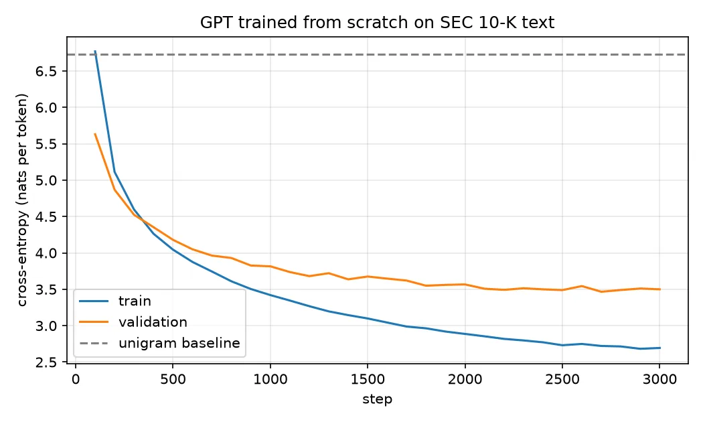

LLM do zero
Um modelo no estilo GPT escrito do zero e treinado em relatórios 10-K num runner de CPU gratuito.
32,0de perplexidade de validação, contra 837 de uma linha de base unigrama

- Decisão que apoia
- Entender e depurar um LLM em vez de tratá-lo como caixa-preta.
- Quem usa
- Times técnicos que ajustam, servem ou depuram modelos de linguagem.
- Quanto custa errar
- Sem entender as peças, um bug de tokenizador ou de cache vira semanas de investigação.
- Como gera valor
- Mostra domínio de cada parte de um modelo de linguagem, com testes, e geração 5,8× mais rápida com o cache.
- Riscos e limites
- É um projeto de aprendizado: o modelo aprende o estilo dos relatórios, não fatos.
Problema
A maioria dos projetos com LLM chama uma API ou ajusta o modelo de outra pessoa. Quando algo quebra, como um tokenizador incompatível, um bug de cache ou uma configuração de amostragem, é preciso entender as peças.
Solução
Cada parte de um transformer só-decodificador construída e testada separadamente: BPE em nível de byte, atenção causal, laço de treino, amostragem e decodificação com KV cache, treinado nas seções Business, Risk Factors e MD&A de relatórios 10-K.
Como funciona
- Cada componente tem os próprios testes, incluindo um BPE ingênuo como referência para o rápido.
- O treino roda no runner gratuito do GitHub Actions, então qualquer pessoa pode reproduzir.
- A decodificação com KV cache é conferida para gerar os mesmos tokens que o recálculo completo, também além do contexto com janela deslizante; a atenção otimizada do PyTorch é medida contra a escrita à mão.
Resultados
| 32,0 | de perplexidade de validação (837 na linha de base unigrama) |
| 5–9× | mais rápido na geração com KV cache em 224 tokens novos (de 4,97× a 9,19× nas rodadas do benchmark, conforme a CPU do runner), conferido token a token |
| 13M | de caracteres de texto de 10-K no conjunto de treino |
Limites
Um modelo pequeno treinado numa CPU: aprende o estilo dos relatórios, não fatos.
Stack
PyTorch, GitHub Actions